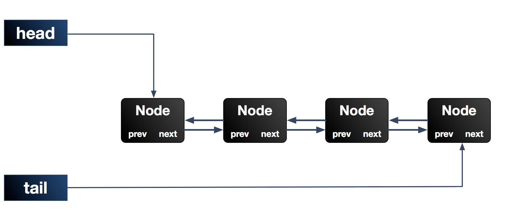

Java并发包（JUC）中提供了很多并发工具，这其中，很多我们耳熟能详的并发工具，譬如ReentrangLock、Semaphore，它们的实现都用到了一个共同的基类–AbstractQueuedSynchronizer,简称AQS。AQS是一个用来构建锁和同步器的框架，使用AQS能简单且高效地构造出应用广泛的大量的同步器，比如我们提到的ReentrantLock，Semaphore，其他的诸如ReentrantReadWriteLock，SynchronousQueue，FutureTask等等皆是基于AQS的。当然，我们自己也能利用AQS非常轻松容易地构造出符合我们自己需求的同步器。
本章我们就一起探究下这个神奇的东东，并对其实现原理进行剖析理解
1. 基本实现原理
AQS使用一个int成员变量来表示同步状态，通过内置的FIFO队列来完成获取资源线程的排队工作。
1 | private volatile int state;//共享变量，使用volatile修饰保证线程可见性 |
状态信息通过procted类型的getState，setState，compareAndSetState进行操作,这三种操作均是原子操作，其中compareAndSetState的实现依赖于Unsafe的compareAndSwapInt()方法
AQS定义两种资源共享方式：Exclusive（独占，只有一个线程能执行，如ReentrantLock）和Share（共享，多个线程可同时执行，如Semaphore/CountDownLatch），组合式的如ReentrantReadWriteLock。总之，AQS为使用提供了底层支撑，如何组装实现，使用者可以自由发挥。
不同的自定义同步器争用共享资源的方式也不同。自定义同步器在实现时只需要实现共享资源state的获取与释放方式即可，至于具体线程等待队列的维护（如获取资源失败入队/唤醒出队等），AQS已经在顶层实现好了。自定义同步器实现时主要实现以下几种方法：
同步器的设计是基于模板方法模式的，一般的使用方式是这样：
1.使用者继承
AbstractQueuedSynchronizer并重写指定的方法。（这些重写方法很简单，无非是对于共享资源state的获取和释放）2.将AQS组合在自定义同步组件的实现中，并调用其模板方法，而这些模板方法会调用使用者重写的方法。
这其实是模板方法模式的一个很经典的应用。
我们来看看AQS定义的这些可重写的方法：
protected boolean tryAcquire(int arg) : 独占式获取同步状态，试着获取，成功返回true，反之为false
protected boolean tryRelease(int arg) ：独占式释放同步状态，等待中的其他线程此时将有机会获取到同步状态；
protected int tryAcquireShared(int arg) ：共享式获取同步状态，返回值大于等于0，代表获取成功；反之获取失败；
protected boolean tryReleaseShared(int arg) ：共享式释放同步状态，成功为true，失败为false
protected boolean isHeldExclusively() ： 是否在独占模式下被线程占用。
关于AQS的使用，我们来简单总结一下：
1.1 如何使用
首先，我们需要去继承AbstractQueuedSynchronizer这个类，然后我们根据我们的需求去重写相应的方法，比如要实现一个独占锁，那就去重写tryAcquire，tryRelease方法，要实现共享锁，就去重写tryAcquireShared，tryReleaseShared；最后，在我们的组件中调用AQS中的模板方法就可以了，而这些模板方法是会调用到我们之前重写的那些方法的。也就是说，我们只需要很小的工作量就可以实现自己的同步组件，重写的那些方法，仅仅是一些简单的对于共享资源state的获取和释放操作，至于像是获取资源失败，线程需要阻塞之类的操作，自然是AQS帮我们完成了。
1.2 设计思想
对于使用者来讲，我们无需关心获取资源失败，线程排队，线程阻塞/唤醒等一系列复杂的实现，这些都在AQS中为我们处理好了。我们只需要负责好自己的那个环节就好，也就是获取/释放共享资源state的姿势。很经典的模板方法设计模式的应用，AQS为我们定义好顶级逻辑的骨架，并提取出公用的线程入队列/出队列，阻塞/唤醒等一系列复杂逻辑的实现，将部分简单的可由使用者决定的操作逻辑延迟到子类中去实现即可。
2. 源码分析
我们先来简单描述下AQS的基本实现，前面我们提到过，AQS维护一个共享资源state，通过内置的FIFO来完成获取资源线程的排队工作。（这个内置的同步队列称为”CLH”队列）。该队列由一个一个的Node结点组成，每个Node结点维护一个prev引用和next引用，分别指向自己的前驱和后继结点。AQS维护两个指针，分别指向队列头部head和尾部tail。

其实就是个双端双向链表。
当线程获取资源失败（比如tryAcquire时试图设置state状态失败），会被构造成一个结点加入CLH队列中，同时当前线程会被阻塞在队列中（通过LockSupport.park实现，其实是等待态）。当持有同步状态的线程释放同步状态时，会唤醒后继结点，然后此结点线程继续加入到对同步状态的争夺中。
2.1 Node结点
Node结点是AbstractQueuedSynchronizer中的一个静态内部类，我们捡Node的几个重要属性来说一下1
2
3
4
5
6
7
8
9
10
11
12
13
14
15
16
17
18
19
20static final class Node {
/** waitStatus值，表示线程已被取消（等待超时或者被中断）*/
static final int CANCELLED = 1;
/** waitStatus值，表示后继线程需要被唤醒（unpaking）*/
static final int SIGNAL = -1;
/**waitStatus值，表示结点线程等待在condition上，当被signal后，会从等待队列转移到同步到队列中 */
/** waitStatus value to indicate thread is waiting on condition */
static final int CONDITION = -2;
/** waitStatus值，表示下一次共享式同步状态会被无条件地传播下去 */
static final int PROPAGATE = -3;
/** 等待状态，初始为0 */
volatile int waitStatus;
/**当前结点的前驱结点 */
volatile Node prev;
/** 当前结点的后继结点 */
volatile Node next;
/** 与当前结点关联的排队中的线程 */
volatile Thread thread;
/** ...... */
}
2.2 独占式
2.2.1 获取同步状态–acquire()
来看看acquire方法，lock方法一般会直接代理到acquire上1
2
3
4
5public final void acquire(int arg) {
if (!tryAcquire(arg) &&
acquireQueued(addWaiter(Node.EXCLUSIVE), arg))
selfInterrupt();
}
通过注释我们知道，acquire方法是一种互斥模式，且忽略中断。该方法至少执行一次tryAcquire(int)方法，如果tryAcquire(int)方法返回true，则acquire直接返回，否则当前线程需要进入队列进行排队。函数流程如下：
a.首先，调用使用者重写的tryAcquire方法，若返回true，意味着获取同步状态成功，后面的逻辑不再执行；若返回false，也就是获取同步状态失败，进入b步骤；
b.此时，获取同步状态失败，构造独占式同步结点，通过addWatiter将此结点添加到同步队列的尾部（此时可能会有多个线程结点试图加入同步队列尾部，需要以线程安全的方式添加）；
c.acquireQueued()使线程在等待队列中获取资源，一直获取到资源后才返回。如果在整个等待过程中被中断过，则返回true，否则返回false。
d.如果线程在等待过程中被中断过，它是不响应的。只是获取资源后才再进行自我中断selfInterrupt()，将中断补上。
2.2.2 addWaiter
为获取同步状态失败的线程，构造成一个Node结点，添加到同步队列尾部1
2
3
4
5
6
7
8
9
10
11
12
13
14
15private Node addWaiter(Node mode) {
Node node = new Node(Thread.currentThread(), mode);//构造结点
//指向尾结点tail
Node pred = tail;
//如果尾结点不为空，CAS快速尝试在尾部添加，若CAS设置成功，返回；否则，eng。
if (pred != null) {
node.prev = pred;
if (compareAndSetTail(pred, node)) {
pred.next = node;
return node;
}
}
enq(node);
return node;
}
先cas快速设置，若失败，进入enq方法
将结点添加到同步队列尾部这个操作，同时可能会有多个线程尝试添加到尾部，是非线程安全的操作。
以上代码可以看出，使用了compareAndSetTail这个cas操作保证安全添加尾结点。
2.2.3 enq方法
1 | private Node enq(final Node node) { |
enq内部是个死循环，通过CAS设置尾结点，不成功就一直重试。很经典的CAS自旋的用法，我们在之前关于原子类的源码分析中也提到过。这是一种乐观的并发策略。
最后，看下acquireQueued方法
2.2.4 acquireQueued
1 | final boolean acquireQueued(final Node node, int arg) { |
acquireQueued内部也是一个死循环，只有前驱结点是头结点的结点，也就是老二结点，才有机会去tryAcquire；若tryAcquire成功，表示获取同步状态成功，将此结点设置为头结点；若是非老二结点，或者tryAcquire失败，则进入shouldParkAfterFailedAcquire去判断判断当前线程是否应该阻塞，若可以，调用parkAndCheckInterrupt阻塞当前线程，直到被中断或者被前驱结点唤醒。若还不能休息，继续循环。
2.2.5 shouldParkAfterFailedAcquire
shouldParkAfterFailedAcquire用来判断当前结点线程是否能休息
1 | private static boolean shouldParkAfterFailedAcquire(Node pred, Node node) { |
若shouldParkAfterFailedAcquire返回true，也就是当前结点的前驱结点为SIGNAL状态，则意味着当前结点可以放心休息，进入parking状态了。parkAncCheckInterrupt阻塞线程并处理中断。1
2
3
4private final boolean parkAndCheckInterrupt() {
LockSupport.park(this);//使用LockSupport使线程进入阻塞状态
return Thread.interrupted();// 线程是否被中断过
}
至此，关于acquire的方法源码已经分析完毕，我们来简单总结下
a.首先tryAcquire获取同步状态，成功则直接返回；否则，进入下一环节；
b.线程获取同步状态失败，就构造一个结点，加入同步队列中，这个过程要保证线程安全；
c.加入队列中的结点线程进入自旋状态，若是老二结点（即前驱结点为头结点），才有机会尝试去获取同步状态；否则，当其前驱结点的状态为SIGNAL，线程便可安心休息，进入阻塞状态，直到被中断或者被前驱结点唤醒。
2.2.6 释放同步状态–release()
当前线程执行完自己的逻辑之后，需要释放同步状态，来看看release方法的逻辑
1 | public final boolean release(int arg) { |
2.2.7 unparkSuccessor:唤醒后继结点
1 | private void unparkSuccessor(Node node) { |
release的同步状态相对简单，需要找到头结点的后继结点进行唤醒，若后继结点为空或处于CANCEL状态，从后向前遍历找寻一个正常的结点，唤醒其对应线程。
2.3 共享式
共享式：共享式地获取同步状态。对于独占式同步组件来讲，同一时刻只有一个线程能获取到同步状态，其他线程都得去排队等待，期待重写的尝试获取同步状态的方法tryAcquire返回值为boolean，这很容易理解；对于共享式同步组件来讲，同一时刻可以有多个线程同时获取到同步状态，这也是“共享”的意义所在。其待重写的尝试获取同步状态的方法tryAcquireShared返回值为int。
1 | protected int tryAcquireShared(int arg) { |
1.当返回值大于0时，表示获取同步状态成功，同时还有剩余同步状态可供其他线程获取；
2.当返回值等于0时，表示获取同步状态成功，但没有可用同步状态了；
3.当返回值小于0时，表示获取同步状态失败。
2.3.1 获取同步状态–acquireShared
1 | public final void acquireShared(int arg) { |
2.3.2 doAcquireShared
1 | private void doAcquireShared(int arg) { |
大体逻辑与独占式的acquireQueued差距不大，只不过由于是共享式，会有多个线程同时获取到线程，也可能同时释放线程，空出很多同步状态，所以当排队中的老二获取到同步状态，如果还有可用资源，会继续传播下去。
1 | private void setHeadAndPropagate(Node node, int propagate) { |
2.3.3 释放同步状态–releaseShared
1 | public final boolean releaseShared(int arg) { |
2.3.4 doReleaseShared
1 | private void doReleaseShared() { |
代码逻辑比较容易理解，需要注意的是，共享模式，释放同步状态也是多线程的，此处采用了CAS自旋来保证。
3.总结
关于AQS的介绍及源码分析到此为止了。
AQS是JUC中很多同步组件的构建基础，简单来讲，它内部实现主要是状态变量state和一个FIFO队列来完成，同步队列的头结点是当前获取到同步状态的结点，获取同步状态state失败的线程，会被构造成一个结点（或共享式或独占式）加入到同步队列尾部（采用自旋CAS来保证此操作的线程安全），随后线程会阻塞；释放时唤醒头结点的后继结点，使其加入对同步状态的争夺中。
AQS为我们定义好了顶层的处理实现逻辑，我们在使用AQS构建符合我们需求的同步组件时，只需重写tryAcquire，tryAcquireShared，tryRelease，tryReleaseShared几个方法，来决定同步状态的释放和获取即可，至于背后复杂的线程排队，线程阻塞/唤醒，如何保证线程安全，都由AQS为我们完成了，这也是非常典型的模板方法的应用。AQS定义好顶级逻辑的骨架，并提取出公用的线程入队列/出队列，阻塞/唤醒等一系列复杂逻辑的实现，将部分简单的可由使用者决定的操作逻辑延迟到子类中去实现。